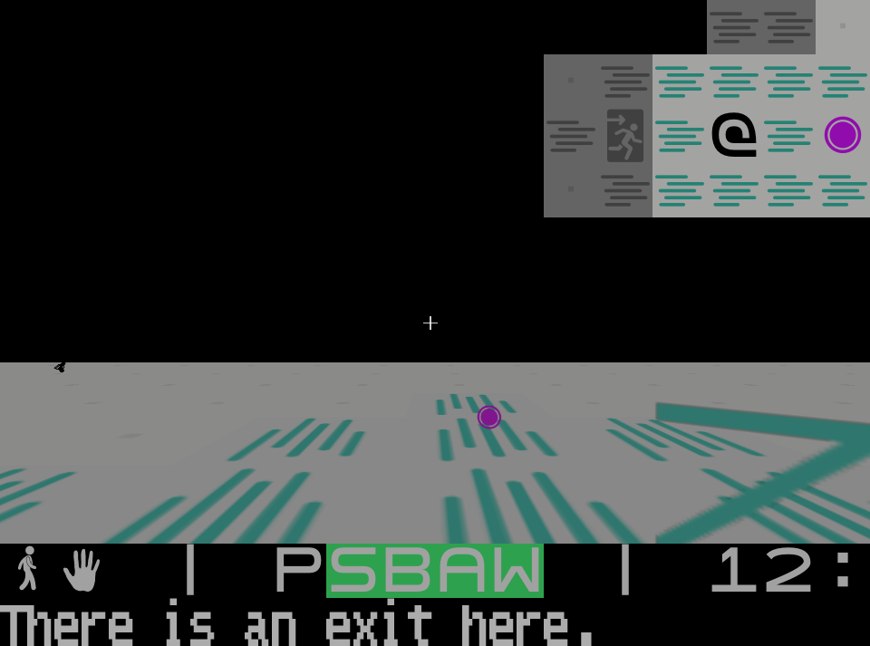

TA3D
Completion ▰▰▰▰▰▱▱▱▱▱ 50% · the whole mission works, nobody has played it through
TA3D is Terminal Assassin played in first person. The simulation is still the 2D game on its tile grid, every guard, schedule and stimulus, but you walk through it in real time, rendered by my go-fps voxel engine.
It is a fork of Terminal Assassin, the 2D original, and the rule was: nothing is cut for being hard. The simulation stays the boss. Actors, AI, zones, scripts and items live on the tiles exactly as before; the 3D view is rebuilt from it every frame. A wall is a tile that is not walkable and not see-through, extruded two blocks high, and every texture is just the tile's glyph in its lit colours. People, items and objects stand on their tiles as upright glyph billboards, picking one of eight facings relative to the camera, the old Doom trick.
The 2D interface did not go anywhere. Menus, the inventory ring, dialogue, briefings and the HUD are the same cell console as before, drawn as a transparent overlay over the 3D frame, and the old glyph map is now the minimap. Peeking and the aim cursor are gone: the crosshair is the aim, and holding E on a door puts your eye at the keyhole.
Controls: WASD and the mouse to walk and look, Shift to run, CapsLock to sneak, left click or Space to use the equipped item, right mouse for the scope, E to act, R to assassinate, Q for the inventory, M for the map, F1 for the full table, Esc to pause.
Features
- The complete Triads-Beta mission from Terminal Assassin, briefing to exit, in first person
- Unchanged 2D simulation: schedules, AI, stimuli, lighting and scripts all from the original
- Free movement with collision; walking onto a new tile moves the actor in the simulation, so every tile trigger still fires
- Bullets and thrown items fly straight 3D lines and hit what they actually touch
- Field of view is the camera's cone; the map only remembers what you have looked at
- Keyhole view, scopes, inside zones with ceilings, per-glyph 3D looks chosen in the editor
- The 2D map editor, with a key to jump into first person at the cursor and back
- Gamepad support and replays, recorded command by command
Under the hood
The bridge is src/world3d.go. Each frame it asks the simulation how every tile looks and only rebuilds the ones that changed. Glyph textures go into an atlas that, when it fills up, simply starts over:
if slot >= a.limit {
// ponytail: start over rather than track which slots are still in use.
// Daylight changing through a long mission fills the atlas now and then.
log.Printf("[3D] %d textures in use, starting the atlas over", a.limit)
a.slots, a.flushed, slot = map[glyphKey]uint16{}, true, 1
}src/ebiten/ is a small stand-in for the parts of the Ebiten API the old input code uses, fed by GLFW callbacks, so those files stay close to upstream and fixes can be merged both ways. The browser build uses go-fps's WebGL2 path, with smaller glyph textures and an in-memory file system in the page for options and career (they are gone when you reload).
Is it a real game?
Playable demo. Same content as the 2D game: one mission. Every action was checked on its own with scripted captures, but the spec says it plainly: nobody has played the mission through from briefing to exit yet. The look is very bare, flat glyph walls under a black sky, and in the browser there is no gamepad.
Screenshots


Latest updates
- 2026-10-04 Runs in the browser (WebGL2)
- 2026-10-01 Real projectiles, 3D looks, inside zones; gamepad and replays; minimap and the editor walk; first person on the go-fps window